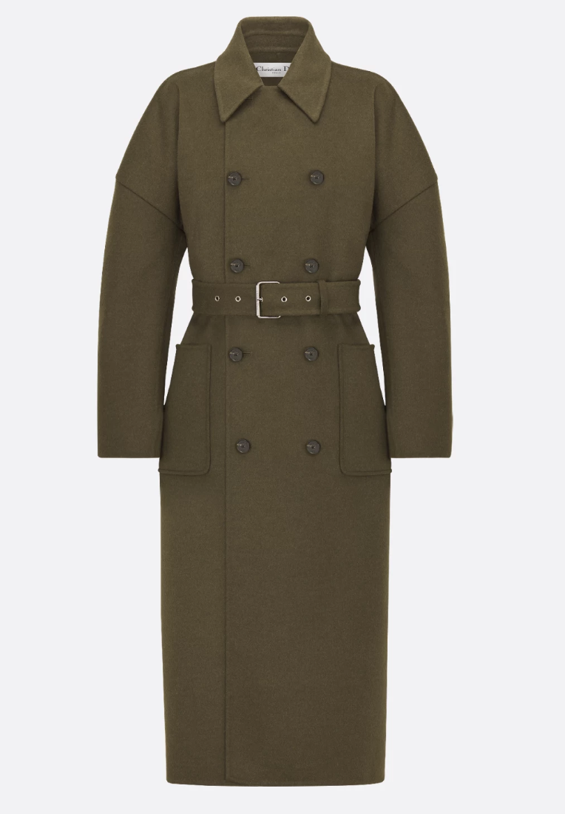
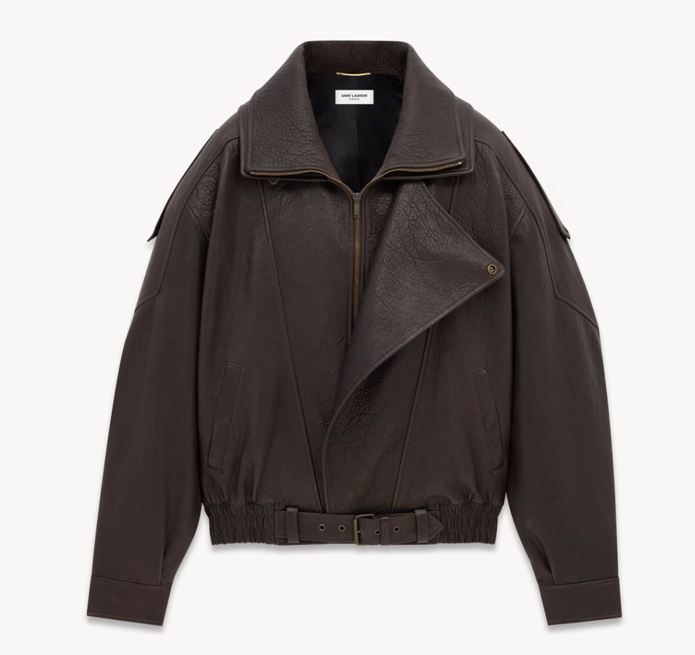
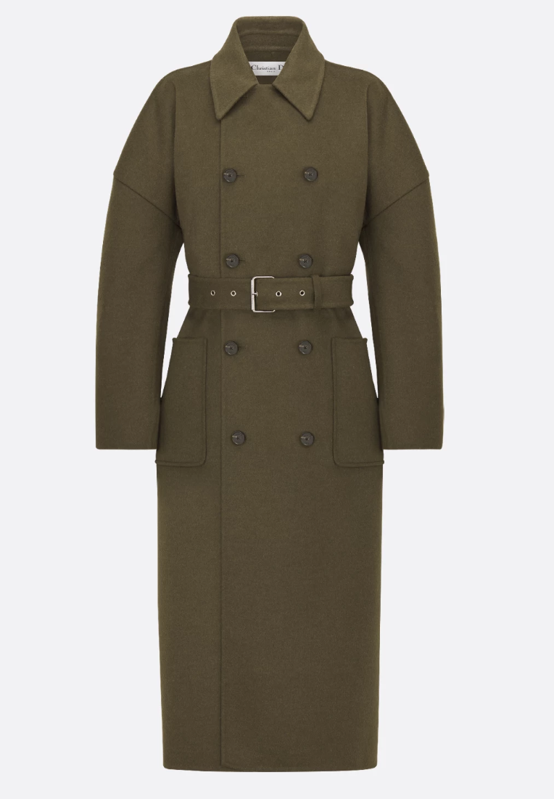
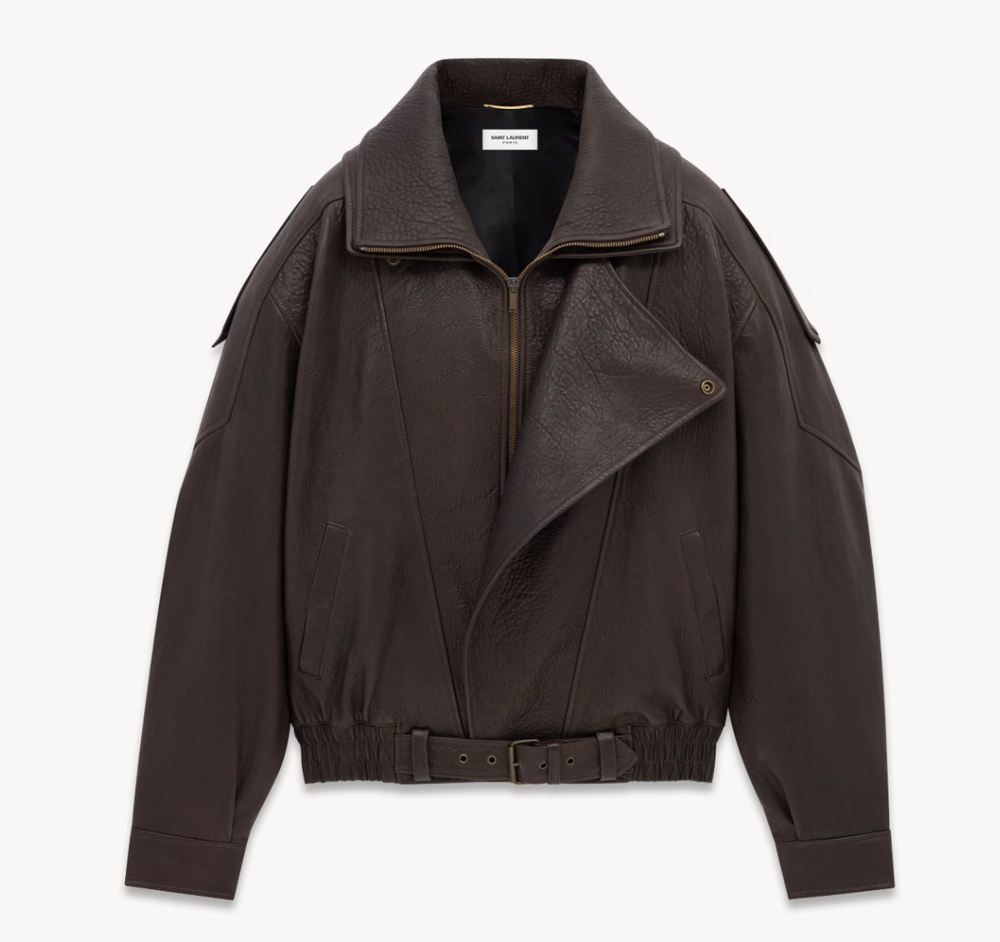

Верхняя одежда
Не пропустите эти стильные модели:
| Название | Изображение | Подробнее |
|---|---|---|
| Пальто из шерсти |  | Подробнее |
| Шуба |  |
Подробнее |
| Кожаная куртка |  | Подробнее |
Не пропустите эти стильные модели:
| Название | Изображение | Подробнее |
|---|---|---|
| Пальто из шерсти |  | Подробнее |
| Шуба | |
Подробнее |
| Кожаная куртка |  | Подробнее |